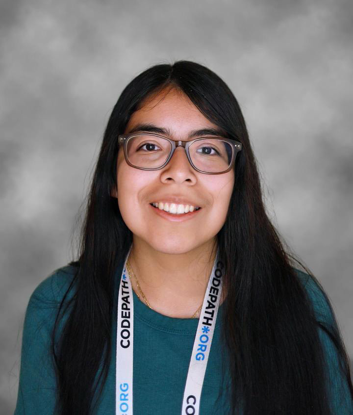

About Me!
Hey, my name is Arely Martinez Garcia! I am a senior and currently pursuing a Bachelor of Science in Computer Science at Lehman College. I have experience with Python, HTML, CSS and Javascript, and I am actively working to improve my skills in these areas. As a student at Lehman College, I am currently learning Java. I am actively working to develop my skills and knowledge in this programming language, and I am eager to apply what I have learned in real-world projects and contribute to the tech industry. My goal is to use my knowledge and skills in computer science to support and empower underrepresented communities through the development of innovative technologies and solutions. Coding has always been a passion of mine, and I am excited to be able to use my skills to make a positive impact in the world.
Aside from my passion for computer science, I am also a huge fan of sports, particularly soccer and baseball. As a huge fan of the Mexican league (Liga MX), I am an avid supporter of Club America, Puebla, and Tigres. In Europe, one of my favorite teams is Bayern Munich. In baseball, I am a die-hard fan of the Yankees.